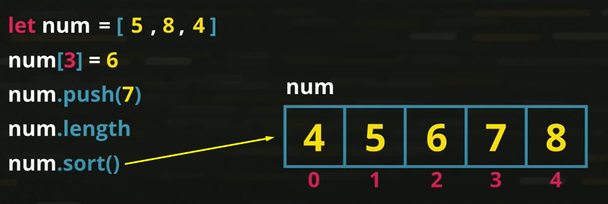

Criar várias variáveis não é prático e precisamos escrever muito. Por isso usamos as variáveis compostas.
Usando várias variáveis simples:
Já usando as variáveis compostas podemos chamar um conjunto de variáveis por um nome só, colocamos um indentificador de índice/chave para encontrar eterminada variável. Para declaramos uma variável composta em javascript usamos var a = [].
Cada espaço para variável recebe um número (chave/key/indice)
Uma variável do tipo composta é chamada de array ou vetor. Um vetor é composto de elementos, é um par que agrupa espaço da memória, o valor colocado dentre dele e o índice. Cada elemento possui se valor e sua chave de identificação.
Exemplo:
Podemos acrescentar valores usamos o nome da variável composta, a chave/indice(entre colchetes) e o valor que ele irá receber.
Se queremos colocar/inserir um valor na última posição usamos o var.push(valor).
Se eu coloco o push embaixo do sort ele vai primeiro organizar os valores e depois colocar o o valor de push (1) no final.
Para saber o comprimento dele usamos o length(em javascript o length é um atributo). Diz quantos elementos/casas tem um array.
Podemos mostrar a posição isoladamente.
Temos o método .sort() que coloca meus elementos em ordem crescente. Sort é um método interno de todo elemento que é um vetor.
Podemos mostrar um vetor na tela sem a formatação padrão (com colchetes).
Para mostrar cada posição (assim nosso código não está prático na digitação):
Podemos usar a estrutura de repetição, assim nosso código fica menor:
No for primeiro colocamos a inicialização, depois o teste lógico, e por último o incremento. O tste lógico colocamos 'pos' menor que num.length (enquanto o pos não chegar no final do meu vetor, enquanto for menor que todos os elementos do meu vetor, que é o comprimento/tamanho dele).
Formas de mostrar os vetores na tela (a segunda forma não é recomendada, pois não é prática):
Chamamos esse processo de percusso para exibição no vetor. Ainda temos um jeito (novo) mais simples utilizando o for com in, veremos a seguir. Esse for tem somente dois elementos (ele é otimizado e só funciona em variáveis compostas e objetos), o primeiro elemento colocamos a variável do meu índice/chave (posição), no segundo elemento colocamos o nome da variável composta(do vetor). Então lê-se: para cada posição(pos) dentro(in=dentro ou em) do meu vetor, eu vou mostrar o vetor[pos] (que é cada posição naquele vetor).
Para buscar valores dentro de um vetor usamos o método indexOf(valor). Ele busca pelo valor e retorna a chave. Se eu colocar um valor que não existe ele retorna -1.
Quando usamos o sort ele da a posição coforme aparece no sort, veja:
Exemplo para valores não encontrados: